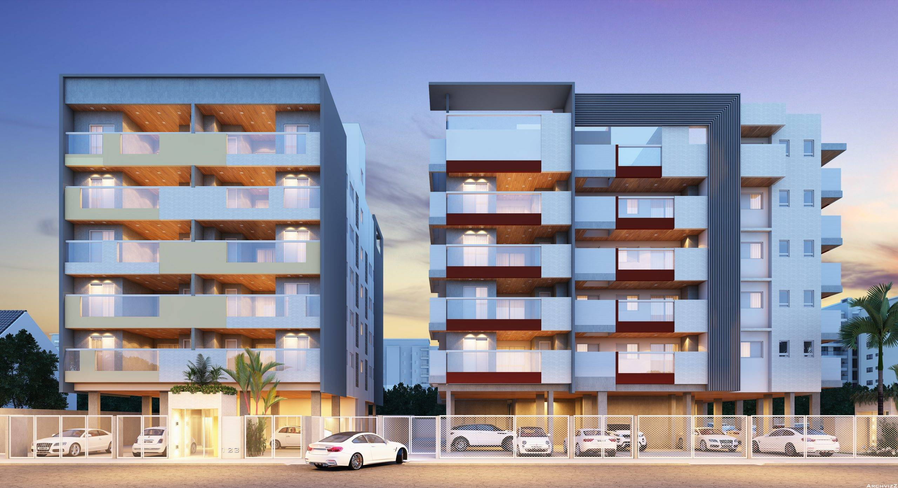
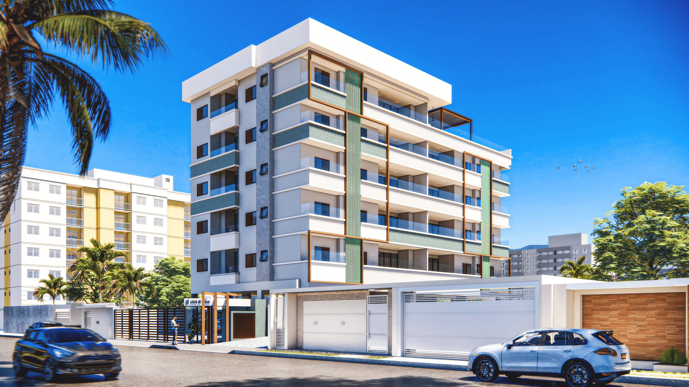
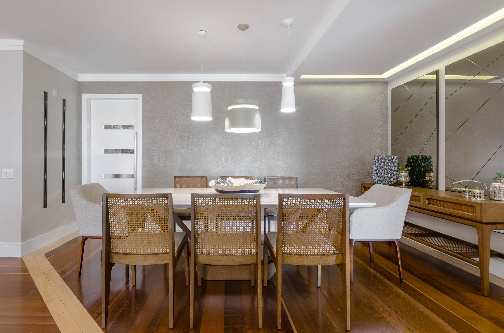
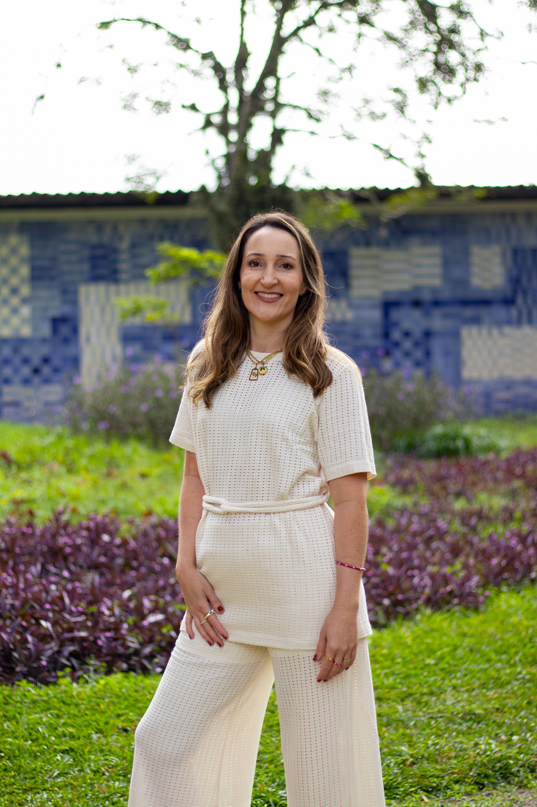

Busca arquiteta em São José dos Campos?
O escritório Carol Magno Arquitetura fica em São José dos Campos e atende projetos na cidade e em outras localidades do Vale do Paraíba. O escopo é definido de acordo com cada projeto.

Arquitetura e Sustentabilidade
Fundado pela arquiteta e urbanista Carolina Magno em São José dos Campos, o escritório Carol Magno Arquitetura desenvolve projetos residenciais, comerciais, edifícios, interiores e estudos de viabilidade no Vale do Paraíba.
Seja muito bem-vindo!
Na Carol Magno Arquitetura, cada projeto é concebido a partir da compreensão das necessidades do cliente, das características do local e das oportunidades de cada edificação. Unimos criatividade, conhecimento técnico e premissas sustentáveis para transformar ideias em soluções arquitetônicas qualificadas, com atenção à viabilidade, à eficiência dos recursos e à qualidade dos espaços.
Utilizamos tecnologia BIM e ferramentas de análise de desempenho para fundamentar decisões desde as etapas iniciais do projeto. Consideramos as condições climáticas e ambientais do entorno, explorando estratégias de iluminação natural, ventilação, conforto térmico e eficiência energética de forma integrada à arquitetura.
Nossa abordagem também contempla o conforto acústico e lumínico, a especificação de materiais, a durabilidade e a qualidade construtiva. Cada escolha é orientada pela busca de soluções coerentes com as necessidades do cliente e com os impactos da edificação ao longo de sua vida útil.
Mais do que desenvolver projetos, entregamos conhecimento técnico e decisão qualificada para uma arquitetura com desempenho, propósito e impacto ambiental real.
Atuação regional
Com escritório em São José dos Campos, Carol Magno Arquitetura atende projetos em cidades do Vale do Paraíba. A arquitetura integra as necessidades do cliente, as características do local e decisões técnicas e sustentáveis.
O escritório Carol Magno Arquitetura fica em São José dos Campos e atende projetos na cidade e em outras localidades do Vale do Paraíba. O escopo é definido de acordo com cada projeto.
A Carol Magno Arquitetura desenvolve projetos residenciais, comerciais e de edifícios, interiores, estudos de viabilidade e consultoria em sustentabilidade e certificações ambientais.
As decisões consideram implantação, iluminação natural, ventilação, conforto térmico, acústico e lumínico, eficiência dos recursos e durabilidade dos materiais.
A tecnologia BIM apoia a coordenação e compatibilização dos projetos, enquanto as análises de desempenho subsidiam a avaliação de alternativas e o aprimoramento das soluções.
Focos do site



Premissas